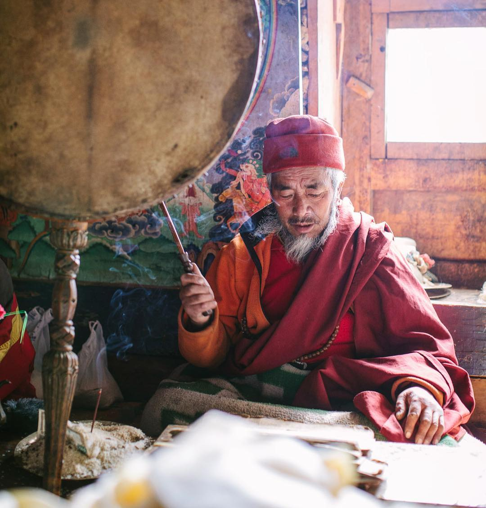
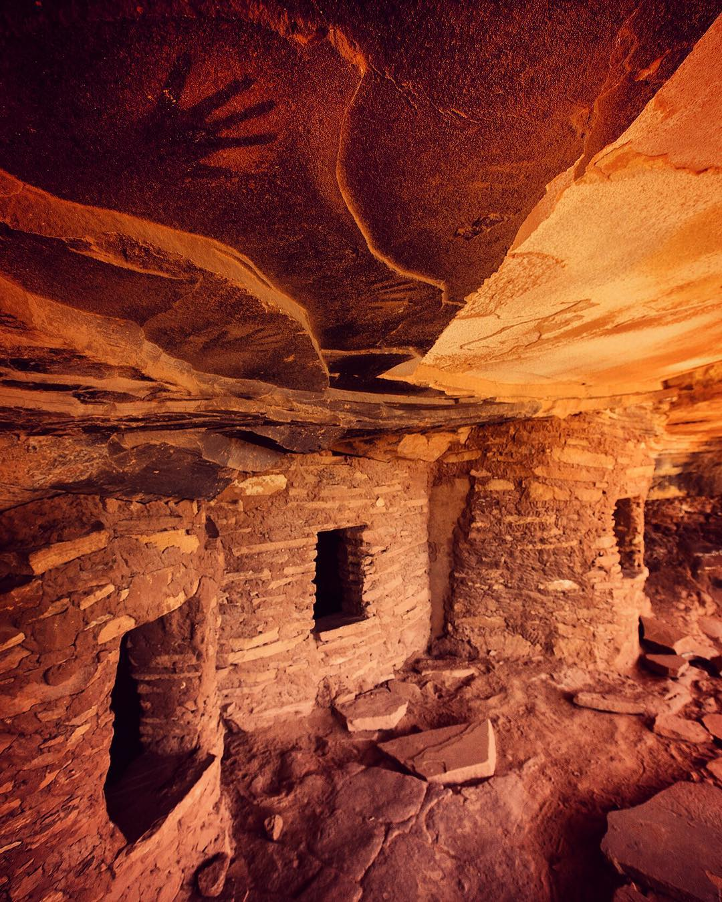

Nepal! Photo by @andy_bardon /// Buddhist monk Nawang Paljor from the village of Pangboche in the Khumbu Valley of Nepal leads a puja ceremony to bless safe passage to visiting climbers. Our small team passed through this village on our way to climb Mt Everest, and we spent over an hour in the company of Nawang Paljor. He burned incense, chanted traditional blessings, and burned some juniper as our team sat quietly reflecting on the task that we had taken on. A few weeks later, after many trials and tribulations, the bulk of our team safely stood on the top of the highest mountain in the world. Shot on assignment for @natgeo @natgeocreative
The Blog
All prayers are good
Pangboche, Nepal, May 2, 2016

"Welcome to my humble abode...."
BearsEarsNationalMonument , Utah, May 2, 2016

Fallen Roof ruin! This Anasazi ruin has 3 fully intact rooms and negative hand prints on the soot stained ceiling. These prints were created by spraying pigment from the mouth around their hand. By 1300 AD Ancestral Puebloans (AKA Anasazi) had vanished from the area. These could go back to 1 AD or earlier. Bears Ears is one of several Monuments up for review under the current administration to possibly be rescinded in the coming weeks. Difficult question: will Monument status protect this ruin or drive tens of thousands to this spot possibly making it "loved to death"? Will rescinding open up huge tracts of land to oil and gas development spoiling this beautiful landscape? Hard questions on the ground here. For more images from this assignment follow @argonautphoto.
Hari Darshan May 3, 2015, 6:32 PM
Sarai ramro lagyo Hajur!.Great blog post! Following